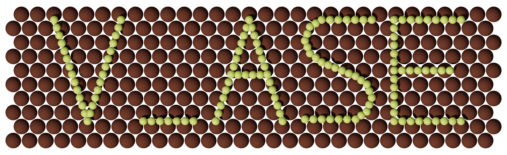
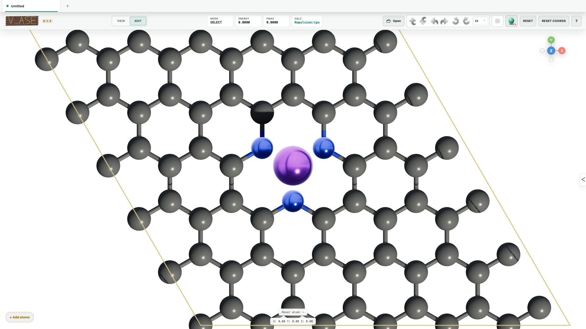

1 · You
Describe the scientific result
“From 6 × 6 graphene, create a pyridinic N3 vacancy, place Li 2.15 Å above it, and show a +Z top view with +Y up.”
No v_ase command syntax is required from the human.
2 · External AI Agent
Uses the v_ase Skill and CLI
 Codex
Codex Claude Code
Claude Code Copilot
Copilotv_ase SkillExact atoms, edits, camera, revision checks, and validation.
Read exact structure state

3 · Shared live document
v_ase applies and shows each change
Structure · labels · camera · rendering · verification

You can refine the same GUI; the Agent reads the new revision.